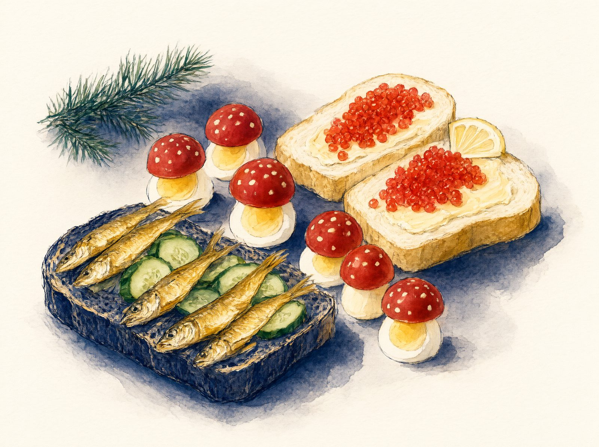
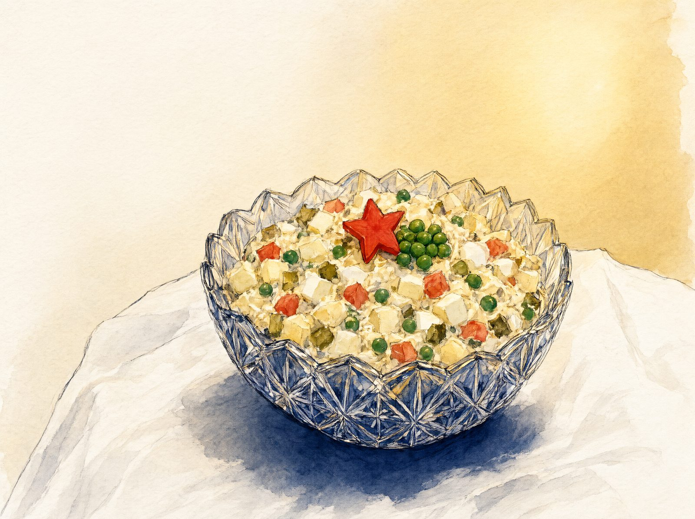
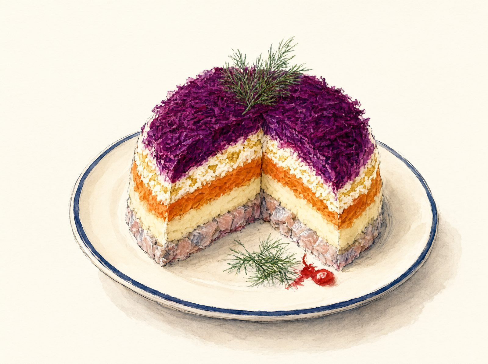
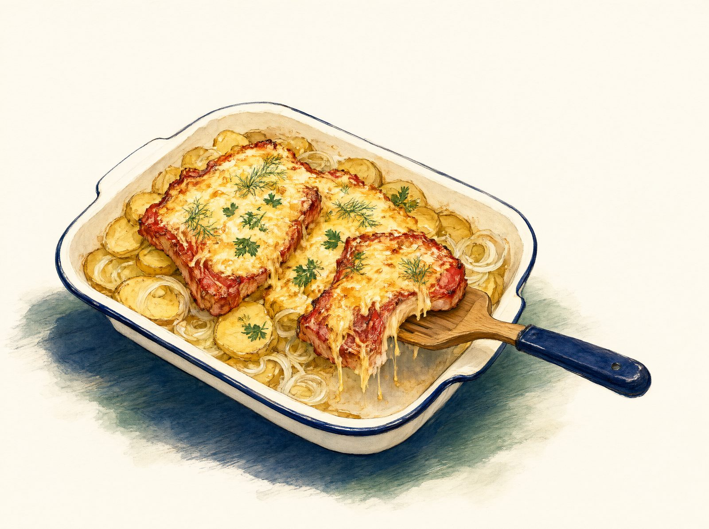
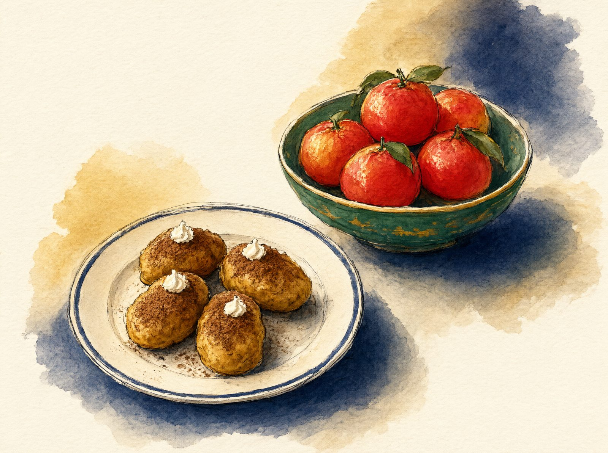
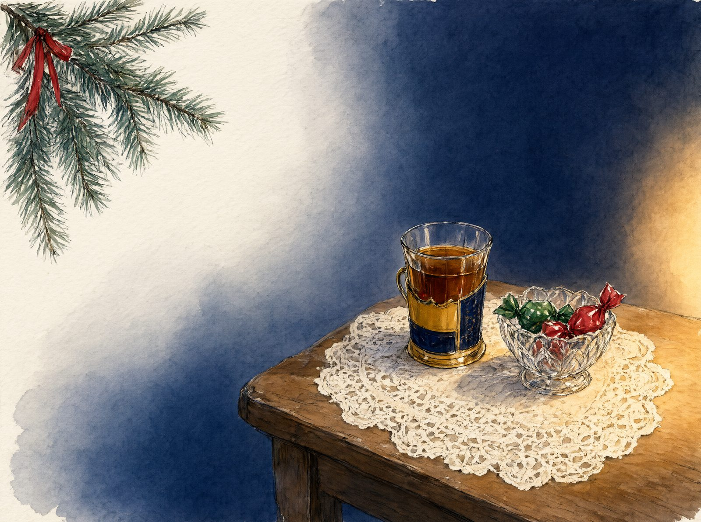

Оливье в хрустальной салатнице, шуба, мандарины и «Ирония судьбы» по телевизору. Рецепты, план по часам, игры и истории для стола. Укажите число гостей, и список покупок соберётся сам.
Хрустальная салатница с оливье. Селёдка под шубой, которую мама собирала с вечера. Запах мандаринов и хвои, вата под ёлкой, стеклянные шары на ниточках. По телевизору «Ирония судьбы», а взрослые спорят, сколько минут осталось до курантов. Этот вечер помнят почти все, кто вырос в СССР, а их дети знают его по рассказам и фильмам.
Мы соберём такой вечер у вас дома. Его можно устроить в любой декабрьский вечер с друзьями или прямо в новогоднюю ночь: для обоих случаев есть свой план.
Почему именно эти блюда
Советский новогодний стол складывался из того, что можно было достать. Колбасу, шпроты, майонез и зелёный горошек покупали заранее, иногда за месяц, и прятали до праздника. Поэтому меню у всех было похожим, и поэтому оно так узнаваемо до сих пор. Мы взяли самые известные блюда и написали их так, чтобы у вас всё получилось с первого раза, даже если вы никогда не собирали шубу.
Все рецепты простые, продукты продаются в любом супермаркете. Почти всё готовится накануне, а при гостях вы только ставите противень в духовку.
Как устроен вечер
Встреча у ёлки. Гости приходят, на столе уже бутерброды со шпротами и с икрой, в бокалах морс или шампанское. Пока все собираются, играем в «Крокодила» на советские слова.
Салаты. Садимся за стол: оливье и селёдка под шубой. Рассказываем истории из шпаргалки.
Горячее. Мясо по-французски прямо на противне. Между горячим и десертом викторина «Правда или миф?» и угадывание фильмов по цитатам.
Чай и сладкое. Пирожное «Картошка» или торт «Наполеон», мандарины, чай с лимоном. Под конец фанты.
Два варианта сладкого
Быстрый: пирожное «Картошка». Без выпечки, 30 минут работы, дети лепят вместе с вами. Подходит, если времени мало или вы впервые принимаете гостей.
Как у бабушки: торт «Наполеон». Восемь тонких коржей и заварной крем. Это 2,5 часа работы и ночь в холодильнике, зато это главный домашний торт советского Нового года. Коржи пекут за 2 дня, торт собирают накануне.
Выберите один. Как меняются план по часам и покупки для «Наполеона», написано в тайминге.
Список покупок
Укажите, сколько будет гостей и какое сладкое вы выбрали, и список пересчитается сам. Отмечайте купленное галочкой прямо в магазине.
Что купить
Все блюда считаются на всех гостей вместе с детьми. «Наполеон» - это один большой торт на 12 человек: если гостей больше, список увеличится на второй торт. «Картошка» считается половинками рецепта. Игристое - одна бутылка на троих взрослых, для детей добавляется лимонад. Соль, перец, уксус и специи из обычного шкафчика в список не входят. Отмеченные покупки запоминаются в этом браузере.
Сладкое выберите одно: «Картошка» или «Наполеон». Время указано полное, вместе с остыванием и ожиданием.
Если за столом дети
Советский Новый год - праздник семейный, и почти всё меню подходит детям без изменений. Многие из нас сами помнят этот стол с детского роста.
Что подходит детям
Оливье, мясо по-французски, бутерброды со шпротами - без изменений.
«Мухоморы» - лучшая детская закуска вечера. Дайте детям собрать их самим: вы чистите яйца и режете помидоры, дети ставят шляпки и рисуют майонезом точки.
Селёдка под шубой - по вкусу ребёнка. Многие дети её не любят из-за селёдки: соберите им маленькую шубу в стакане без рыбы (из тех же овощей).
«Картошка» - сделайте детскую часть без коньяка. Детям очень нравится катать «картофелины» и обваливать их в какао.
Икра - очень солёная, маленьким детям лучше давать понемногу.
Напиток. Домашний «Тархун» (рецепт в разделе напитков) или магазинный «Буратино» и «Дюшес» в таких же бокалах, как у взрослых. Сироп для «Тархуна» дети могут помочь сделать: оборвать листья и выжать лимон. Под куранты дети чокаются вместе со всеми.
Чем занять детей
Снежинки на окна. Как вырезать, написано в атмосфере. Дети вырезают, взрослые клеят.
Бумажная гирлянда-цепочка. Нарежьте цветную бумагу полосками 2×15 см. Первую полоску склейте в колечко, вторую проденьте в него и тоже склейте, и так дальше. За полчаса получается гирлянда на всю комнату.
«Крокодил». Для детей отложите простые карточки: Дед Мороз, лыжи, хоккей, мандарины, гирлянда, костюм снежинки.
Стишок на табуретке. Самая советская традиция: ребёнок встаёт на табуретку и читает Деду Морозу стихотворение, а взрослые хлопают и дарят мандарин или конфету.
Хоровод. «В лесу родилась ёлочка» вокруг ёлки, все вместе.
Безопасность. - Для детей младше 5 лет разрезайте черри пополам, а мелкие конфеты и орехи держите на верхней полке. - Вата под ёлкой и мишура горят: следите, чтобы дети не подносили их к свечам и гирлянде. - Шампанское открывают взрослые и в сторону от детей.
В списке покупок внизу написано, сколько продуктов добавить на детей.
Тайминг и список покупок
Расчёт на 6 взрослых. Есть два плана: обычный декабрьский вечер (гости в 19:00) и новогодняя ночь (гости в 21:00, куранты в полночь). Выберите свой. Если время другое, сдвиньте всё на ту же разницу.
Почти всё готовится накануне. В день праздника у вас остаётся только мясо на противне и бутерброды.
Накануне (одинаково для обоих планов)
Если праздник 31 декабря, «накануне» - это 30 декабря.
Когда
Что делать
Сколько времени
днём
Купить продукты по списку ниже
-
17:00
Поставить вариться свёклу (1-1,5 ч). Рядом в другой кастрюле картофель и морковь для оливье и шубы (25-35 мин) и яйца (10 мин, все 14 штук сразу)
10 мин работы
17:15
Пока всё варится: «Картошка». Смешать, скатать, убрать в холодильник
30 мин
17:45
Морс: отжать сок, сварить отвар, оставить остывать
20 мин
18:30
Слить воду, выложить овощи и яйца остывать. Яйца для бутербродов («мухоморы», 6 шт.) отложить в холодильник отдельно
5 мин
19:30
Оливье: нарезать всё, кроме майонеза, накрыть, в холодильник
25 мин
20:00
Шуба: разделать селёдку, натереть овощи, собрать слои, в холодильник на ночь
40 мин
20:40
Соединить морс с соком, в холодильник. Игристое и газированную воду в холодильник
5 мин
20:45
Сироп для «Тархуна»: сварить, настоять с тархуном, процедить, в холодильник
При гостях вы встаёте из-за стола только три раза, каждый на пару минут: поставить противень, посыпать сыром и вынуть его.
План Б. Новогодняя ночь (гости в 21:00)
Когда
Что делать
Сколько времени
днём 31-го
Отдохнуть. Всё главное сделано вчера
-
18:30
Мясо по-французски: собрать противень без сыра, в холодильник
40 мин
19:30
Накрыть стол, мандарины, конфеты, гирлянда
30 мин
20:15
Бутерброды со шпротами, «мухоморы», потом с икрой
40 мин
20:55
«Тархун»: сироп, лёд и газированную воду в кувшин
3 мин
21:00
Гости пришли. Бутерброды у ёлки, «Крокодил»
-
21:15
Заправить оливье
3 мин
21:30
За стол: салаты. Проводить старый год: каждый говорит, что хорошего было в уходящем году
-
21:45
Включить духовку на 190 °C
1 мин
22:00
Противень с мясом под фольгой в духовку
2 мин
22:30
Снять фольгу, посыпать сыром
3 мин
22:55
Вынуть мясо, дать постоять
-
23:05
Горячее на стол
-
23:30
Викторина «Правда или миф?»
15 мин
23:50
Игристое и «Тархун» на стол. Раздать бумажки и ручки, если загадываете желания письменно
3 мин
23:55
Звук телевизора громче. Открыть шампанское до курантов
2 мин
00:00
Куранты. Желание, бокалы, «С Новым годом!»
-
00:15
Выйти во двор смотреть салют или позвонить родным
-
00:45
Чай, «Картошка», мандарины. Цитаты из фильмов, фанты
-
Список покупок
Овощи, фрукты, зелень
Картофель - 2 кг (500 г на оливье, 350 г на шубу, 1 кг на мясо)
Морковь - 5 шт. (2 на оливье, 2 на шубу, 1 для украшения)
Свёкла - 2 шт. средние
Лук репчатый - 4 шт. (1 на шубу, 3 на мясо)
Лук зелёный - 1 пучок
Огурцы солёные или маринованные - 4 шт. (около 250 г)
Огурец свежий - 1 шт. (для бутербродов со шпротами)
Помидоры черри крупные - 3 шт. (или 3 маленьких помидора «сливка»)
Салат листовой - 1 небольшой пучок
Чеснок - 1 головка (нужен 1 зубчик)
Укроп - 1 пучок, петрушка - 1 пучок
Лимоны - 3 шт. (к икре, к чаю и для «Тархуна»)
Тархун (эстрагон) свежий - 2 пучка
Мандарины - 2 кг
Клюква свежая или замороженная - 400 г
Мясо, колбаса, рыба
Свинина без кости (шея или корейка) - 1 кг
Колбаса докторская - 400 г
Сельдь слабосолёная целиком - 1 крупная (около 400 г) или филе 300 г
Шпроты в масле - 1 банка
Икра лососёвая - 1 банка (100-140 г)
Молочное и яйца
Яйца С1 - 14 шт. (5 на оливье, 3 на шубу, 6 на «мухоморы»; купите 2 десятка)
Масло сливочное 82,5% - 250 г (2 пачки по 180 г, останется)
Сыр твёрдый - 250 г
Молоко сгущённое - 1 банка (нужна половина)
Майонез 67% - 800 г (2 упаковки по 400 г)
Бакалея
Горошек зелёный консервированный - 1 банка 400 г
Печенье сахарное («Юбилейное» или похожее) - 500 г
Какао-порошок - 1 упаковка (нужно 5 ст. л.)
Сахарная пудра - 2 ст. л.
Сахар - 200 г
Грецкие орехи - 60 г (по желанию)
Масло растительное - 2-3 ст. л.
Уксус 9% - 1 ч. л. (по желанию)
Соль, чёрный перец
Чай чёрный листовой, варенье
Шоколадные конфеты в фантиках - 300-500 г
Хлеб
Батон нарезной - 1 шт.
Хлеб бородинский - 1 шт. (или второй батон)
Напитки
Игристое вино - 2-3 бутылки (брют к столу, полусладкое к десерту; как выбрать, в разделе про игристое)
Газированная вода - 1,5 л (для «Тархуна»)
Лимонад «Буратино» или «Дюшес» - 1 бутылка (по желанию, если дети любят магазинный)
Коньяк или ром - 1-2 ст. л. для «Картошки» (по желанию)
Хозяйственное
Фольга, пищевая плёнка, пергамент
Одноразовые перчатки (для свёклы и селёдки)
Плотная бумага для печати карточек, белая бумага или салфетки для снежинок
Вариант с «Наполеоном»
Если вместо «Картошки» вы печёте торт «Наполеон», план меняется так.
Тайминг
Когда
Что делать
Сколько времени
за 2 дня, вечером
Тесто: замесить, разделить на 8 шариков, в холодильник на 1 час. Коржи: раскатать и испечь по одному. Остывшие сложить в пакет
1 ч 40 мин
накануне, 17:15
Вместо «Картошки»: заварной крем. Сварить, остудить под плёнкой
25 мин + 1 ч остывания
накануне, 21:00
Взбить масло, соединить с кремом, собрать торт, посыпать крошкой, в холодильник на ночь
20 мин
в день праздника
Достать торт за 30 минут до чая
-
Накануне получается на полчаса больше работы, чем с «Картошкой», и ещё почти 2 часа за день до этого.
Покупки
Вместо печенья, сгущёнки, какао, сахарной пудры и орехов для «Картошки» купите: - Мука пшеничная - 600 г (450 г в тесто, 60 г в крем, остальное на подпыл) - Масло сливочное 82,5% - всего около 510 г вместо 250 г (60 г на бутерброды с икрой, 250 г в тесто, 200 г в крем), то есть 3 пачки по 180 г - Молоко 3,2% - 1 л - Яйца - ещё 4 шт. (всего 18; купите 2 десятка) - Сахар - ещё 250 г - Ванильный сахар - 1 пакетик - Уксус 9% - 1 ст. л. (или лимон) - Пергамент - 8-10 листов
Если за столом дети
Добавьте на каждых 2 детей: - Яйца - ещё 2 шт. и крупные черри - ещё 1 шт. (дополнительные «мухоморы») - Лимонад - по 0,5 л на ребёнка - Мандарины - ещё 0,5 кг
Шампанское и коньяк считайте только на взрослых. Подробнее в разделе Если за столом дети.
Рецепты
У ёлки
Праздничные бутерброды и «мухоморы»

Активно
35 мин
Всего
35 мин
Порции
6 (по 2 бутерброда каждого вида + «мухоморы»)
Духовка
180 °C на 5 минут, чтобы подсушить хлеб (или сковорода, или тостер)
Шпроты и красная икра были главными «дефицитными» закусками советского праздника. Банки покупали заранее и не открывали до Нового года. Бутерброды встречают гостей у ёлки, пока все собираются, а «мухоморы» с удовольствием собирают дети.
История
Шпроты - это маленькая рыбка (килька или салака), которую горячим дымом коптят и консервируют в масле. Больше всего их делали в Латвии, и «рижские шпроты» в плоской золотистой банке стали символом праздничного стола. Банку с ключом-открывалкой открывали торжественно, а масло из неё не выливали: макали в него хлеб.
Красная икра была дорогой и редкой, поэтому её мазали тонко, на масло, по половинке чайной ложки на кусок. Бутерброд с икрой был признаком того, что праздник настоящий.
Ингредиенты
Бутерброды со шпротами (12 шт.)
бородинский хлеб или батон12 ломтиков
шпроты в масле (160-240 г)1 банка
чеснок1 зубчик
майонез (или 30 г мягкого сливочного масла)2 ст. л.
огурец свежий или солёный1 шт
несколько веточек укропа
Бутерброды с красной икрой (12 шт.)
батон нарезной12 ломтиков
масло сливочное 82,5%, мягкое60 г
икра лососёвая (100-140 г)1 банка
лимон (по желанию)0,5 шт
несколько веточек укропа или петрушки
«Мухоморы» (6 шт.)
яйца С1, сваренные вкрутую6 шт
помидоры черри крупные (диаметром 3-4 см) или 3 маленьких помидора «сливка»3 шт
майонез (или густая сметана)1-2 ст. л.
салат или веточки укропа6 листьев
Шаги
1. Подсушить хлеб · 7 мин
Нарежьте хлеб ломтиками толщиной около 1 см. Батон можно разрезать по диагонали: ломтики будут длиннее и красивее. Разложите на противне и подсушите в духовке при 180 °C 4-5 минут, пока хлеб не станет хрустким снаружи. Можно подсушить на сухой сковороде по минуте с каждой стороны или в тостере. Остудите.
2. Бутерброды со шпротами · 10 мин
Тёплые ломтики бородинского хлеба (или батона) натрите разрезанным зубчиком чеснока с одной стороны. Тонко намажьте майонезом. Огурец нарежьте тонкими кружками. На каждый ломтик положите кружок огурца, сверху 1-2 шпротины, хвостиками в одну сторону. Украсьте веточкой укропа.
3. Бутерброды с икрой · 7 мин
Ломтики батона намажьте сливочным маслом, ровно, до краёв. Сверху положите по половине чайной ложки икры и аккуратно распределите ложкой в один слой. Украсьте маленьким треугольником лимона и веточкой зелени.
4. «Мухоморы» · 10 мин
Каждый мухомор делается из целого яйца: яйцо - это «ножка», половинка помидора - «шляпка».
Ножка. С тупого (широкого) конца очищенного яйца срежьте тонкий кружок, 3-4 мм, чтобы яйцо устойчиво стояло. С острого конца срежьте такой же тонкий кружок: получится ровная площадка для шляпки. Поставьте яйца на листья салата.
Шляпка. Помидор разрежьте пополам поперёк и чайной ложкой выньте семена с соком, иначе шляпка будет скользить и подтекать. Промокните срез салфеткой.
Собрать. На площадку яйца положите каплю майонеза и накройте половинкой помидора срезом вниз, слегка прижмите. Майонез работает как клей. Шляпка чуть шире площадки и свисает краями, как у настоящего гриба.
Точки. Майонезом из пакета с маленькой дырочкой (или зубочисткой) нарисуйте на шляпках белые точки.
Практический блок
Когда собирать. Шпроты и «мухоморы» можно собрать за час до гостей и накрыть плёнкой. Бутерброды с икрой лучше собрать за 20-30 минут, иначе хлеб подсохнет.
Подача. На большом блюде рядами: шпроты, икра, «мухоморы» по краю. Поставьте блюдо у ёлки или на краю стола, где гости собираются.
Если икра не по карману. Возьмите одну банку икры на 6 бутербродов, а ещё 6 сделайте со слабосолёной красной рыбой или с икрой мойвы. Гостям будет так же празднично.
Аллергены. Глютен (хлеб), рыба, молочное (масло), яйца, горчица (в майонезе).
Салаты
Салат оливье

Активно
40 мин
Всего
2 ч (с остыванием овощей)
Порции
6 (около 1,6 кг салата)
Духовка
не используется (или 200 °C, если запекаете овощи)
Главный салат новогоднего стола. В СССР его называли по-разному: «Столичный», «Мясной», а дома просто оливье. Рецепт в каждой семье свой, и спор, класть ли в оливье морковь, ведут до сих пор. Мы даём самый распространённый советский вариант с докторской колбасой и морковью, а замены написаны в конце.
История
В 1860-х годах в Москве на Трубной площади открылся ресторан «Эрмитаж». Им управлял повар Люсьен Оливье, по происхождению француз. Его фирменный салат был совсем не похож на наш: по описаниям того времени, в нём были рябчики, раковые шейки, каперсы, оливки и соус провансаль. Точный рецепт Оливье держал в секрете и, по легенде, унёс с собой.
После революции рябчиков и раковых шеек было не достать, и салат стали делать из того, что было: варёной курицы или мяса, потом из докторской колбасы, картошки, солёных огурцов и горошка. Так ресторанное блюдо стало самым народным салатом страны.
Ингредиенты
картофель среднего размера (около 500 г)4 шт
морковь (около 200 г)2 шт
яйца С15 шт
колбаса докторская (или отварная курица, говядина, язык)400 г
огурцы солёные или маринованные (около 250 г)3-4 шт
горошек зелёный консервированный (400 г)1 банка
лук зелёный (по желанию)0,5 пучка
майонез 67% жирности («Провансаль»)250 г
соль и молотый чёрный перец по вкусу
Для украшения (по желанию)
горошек1-2 ст. л.
варёная морковь (вырезать звёздочки или «розочку»)1 шт
веточки укропа или петрушки
Шаги
1. Сварить овощи и яйца · 10 мин работы + 35 мин варки
Картофель и морковь хорошо вымойте щёткой и, не очищая, положите в кастрюлю. Залейте холодной водой так, чтобы она покрывала овощи на 2 пальца, посолите и поставьте на огонь. После закипания убавьте огонь до среднего. Картофель варится около 20-25 минут, морковь около 30-35 минут. Проверяйте ножом: он должен входить легко, но овощ не должен разваливаться.
Яйца положите в другую кастрюлю, залейте холодной водой, доведите до кипения и варите 10 минут. Сразу переложите в холодную воду.
2. Полностью остудить · 1 ч (без вашего участия)
Слейте воду, переложите овощи на тарелку и дайте остыть до комнатной температуры, а лучше уберите их в холодильник. Это самый важный шаг.
3. Нарезать · 20 мин
Очистите картофель, морковь и яйца. Нарежьте всё одинаковыми кубиками примерно 7-8 мм, размером с горошину побольше. Колбасу и огурцы тоже режьте кубиком такого же размера. Огурцы после нарезки слегка отожмите рукой и слейте сок. С горошка слейте жидкость через дуршлаг. Зелёный лук нарежьте мелко.
Сложите всё в большую миску, но не перемешивайте с майонезом.
4. Хранить без майонеза · до 1 суток
Если готовите накануне, накройте миску крышкой или плёнкой и уберите в холодильник незаправленным. Нарезанные продукты спокойно простоят до следующего дня.
5. Заправить перед подачей · 3 мин
За 15-30 минут до того, как сесть за стол, добавьте майонез, посолите, поперчите и аккуратно перемешайте большой ложкой. Попробуйте: если суховато, добавьте ещё 1-2 ложки майонеза.
Выложите в салатницу горкой, сверху разложите горошек, звёздочки из моркови и зелень.
Практический блок
Подача по-советски. Хрустальная или стеклянная салатница, горка, сверху «розочка» из варёной моркови и веточка петрушки. Если хрусталя нет, подойдёт любая прозрачная миска.
Замены. - Вместо колбасы: отварная куриная грудка (2 шт.) или говядина 400 г. Такой вариант ближе к «Столичному» салату из советских ресторанов. - Без моркови. Многие семьи кладут в оливье морковь, многие нет. Если сомневаетесь, сварите её отдельно и добавьте в половину салата. - Свежий огурец. Можно добавить 1 свежий огурец к солёным: салат станет свежее. - Полегче. Половину майонеза замените густой сметаной 20%.
Сколько нужно. На праздничном столе, где есть и другие салаты, оливье съедают около 200-250 г на человека. Наш рецепт рассчитан на 6 человек с небольшим запасом «на утро 1 января».
Аллергены. Яйца, горчица (в майонезе).
Салаты
Селёдка под шубой

Активно
45 мин
Всего
1 ч 30 мин + минимум 4 ч в холодильнике
Порции
6-8
Духовка
не используется (или 200 °C, если запекаете свёклу)
Слоёный салат: внизу селёдка с луком, сверху картофель, морковь и яйца, а наверху яркая «шуба» из свёклы. Её собирают накануне, за ночь слои пропитываются и салат становится нежным. Для хозяина это удобно: утром 31-го шуба уже готова.
История
Откуда взялась шуба, точно не знает никто. Есть красивая легенда: будто бы в 1918 году московский повар Аристарх Прокопцев придумал салат для трактира, где пролетарии постоянно дрались. Селёдка означала рабочих, овощи крестьян, свёкла красное знамя, а название расшифровывалось как лозунг: «Шовинизму и Упадку - Бойкот и Анафема», сокращённо Ш.У.Б.А. Никаких документов о поваре и трактире не найдено, так что, скорее всего, это весёлая выдумка.
Надёжно известно другое: селёдка с картошкой и луком была обычной русской закуской задолго до революции, а слоёные салаты под майонезом стали массово готовить в советские годы. К 1970-м шуба уже была на каждом новогоднем столе.
Ингредиенты
сельдь слабосолёная целиком, крупная (около 400 г) или 300 г готового филе1 шт
лук репчатый небольшой (можно красный)1 шт
картофель среднего размера (около 350 г)3 шт
морковь (около 200 г)2 шт
свёкла средняя (около 400 г)2 шт
яйца С1 (по желанию)3 шт
майонез 67% жирности250 г
уксус 9% (для лука, по желанию)1 ч. л.
Шаги
1. Сварить овощи · 10 мин работы + до 1,5 ч варки
Картофель, морковь и свёклу вымойте, не очищая. Свёклу варите отдельно от остальных, она красит воду: залейте холодной водой, после закипания варите на среднем огне 1-1,5 часа. Картофель и морковь варите вместе 25-35 минут. Яйца варите 10 минут. Проверка овощей ножом: он должен входить легко.
Всё полностью остудите, лучше в холодильнике.
2. Разделать селёдку · 15 мин
Если купили целую рыбу, наденьте перчатки. Отрежьте голову и хвост, разрежьте брюшко и удалите внутренности. Снимите кожу: подцепите её ножом у головы и потяните к хвосту. Разрежьте рыбу вдоль спинки и снимите два филе с хребта. Пинцетом или пальцами выньте крупные кости. Готовое филе нарежьте кубиками около 1 см.
3. Подготовить лук · 5 мин + 10 мин ожидания
Лук нарежьте очень мелко. Чтобы убрать горечь, залейте его кипятком на 5 минут, слейте воду, или сбрызните уксусом и оставьте на 10 минут.
4. Натереть овощи · 10 мин
Очистите остывшие овощи и яйца. Картофель, морковь, свёклу и яйца натрите на крупной тёрке, каждый в отдельную миску. Свёклу трите последней и в перчатках.
5. Собрать слои · 10 мин
Поставьте кольцо на блюдо (или собирайте просто горкой). Каждый слой слегка разровняйте вилкой и смажьте тонким слоем майонеза: удобно выдавить его сеточкой из пакета и разровнять ложкой.
Селёдка, сверху лук. Майонез.
Картофель. Майонез.
Яйца (если кладёте). Майонез.
Морковь. Майонез.
Свёкла. Сверху майонез сплошным слоем, гладко.
Не утрамбовывайте слои сильно, просто слегка прижимайте.
6. Дать постоять · минимум 4 ч, лучше ночь
Накройте плёнкой (так, чтобы она не касалась верха) и уберите в холодильник. Перед подачей снимите кольцо: проведите между кольцом и салатом тонким ножом.
Практический блок
Украшение. Сверху выложите майонезом сеточку, звёздочку или цифры наступающего года. Можно посыпать тёртым желтком и рубленой зеленью.
Хранение. В холодильнике до 2 суток. Собрать шубу удобно утром накануне праздника или вечером, чтобы следующий день был свободным.
Без рыбы. Для гостей, которые не едят рыбу, отложите немного овощей и соберите маленькую шубу в стакане без селёдки. Получится «свекольный салат под шубой» с тем же вкусом.
Аллергены. Рыба, яйца, горчица (в майонезе).
Горячее
Мясо по-французски

Активно
35 мин
Всего
1 ч 30 мин
Порции
6
Духовка
190 °C, 50-60 минут
Самое праздничное горячее советского стола: отбивные, лук, картофель и сырная корочка, всё на одном противне. Его удобно готовить для гостей: собрать можно за пару часов, а в духовку поставить, когда садитесь за салаты. Через час горячее готово, а вы ни разу не встали к плите.
История
Во Франции такого блюда нет. Говорят, что его предок - «телятина Орлов» (veau Orloff): телятина, запечённая с грибами, луком и сырным соусом. Её будто бы придумал французский повар для русского графа Орлова в XIX веке. Советские повара упростили рецепт: телятину заменили свининой, сложный соус майонезом, добавили картошку, а «французское» название осталось. К 1970-80-м мясо по-французски стало обязательным блюдом на свадьбах, юбилеях и в новогоднюю ночь.
Ингредиенты
свинина без кости (шея или корейка)1 кг
картофель1 кг
лук репчатый3 шт
сыр твёрдый (российский, гауда или похожий)250 г
майонез (или сметана 20%)200 г
масло растительное для формы2 ст. л.
соль и молотый чёрный перец по вкусу
По желанию
шампиньоны300 г
помидоры2 шт
Шаги
1. Отбить мясо · 15 мин
Нарежьте свинину поперёк волокон на куски толщиной около 1,5 см. Должно получиться 10-12 кусков. Каждый положите в пакет или накройте плёнкой и отбейте молотком до толщины примерно 7-8 мм. Посолите и поперчите с двух сторон.
2. Нарезать картофель и лук · 15 мин
Картофель очистите и нарежьте тонкими кружками, 3-4 мм. Сразу посолите и перемешайте. Лук нарежьте тонкими полукольцами. Сыр натрите на крупной тёрке. Если кладёте грибы, нарежьте их пластинками, помидоры кружками.
3. Собрать на противне · 10 мин
Смажьте противень маслом. Слоями:
Картофель ровным слоем, кружки чуть внахлёст.
Отбивные, плотно друг к другу.
Лук.
Грибы и помидоры (если используете).
Майонез сеточкой, потом разровнять ложкой тонким слоем.
Сыр пока не кладите.
4. Запечь · 50-60 мин
Разогрейте духовку до 190 °C. Накройте противень фольгой и запекайте 30 минут. Снимите фольгу, посыпьте сыром и запекайте ещё 20-30 минут, пока сыр не станет золотистым, а картофель мягким: проверьте ножом в середине противня.
5. Дать постоять · 10 мин
Выньте противень и дайте постоять 10 минут: сок впитается обратно в мясо. Нарежьте на порции прямо в противне лопаткой, так чтобы в каждом куске был картофель, мясо и корочка.
Практический блок
Подача. По-советски: прямо в противне или в большой форме на подставке посреди стола. Рядом свежие овощи или квашеная капуста.
Замены. - Курица. Вместо свинины 1 кг куриного филе или бёдер без кожи. Отбейте до 1 см. Время запекания то же. - Без майонеза. Сметана 20% с ложкой горчицы. - Без картофеля. Только мясо, лук и сыр. Тогда запекайте 35-40 минут, а гарнир (пюре или рис) сделайте отдельно.
Хранение. Остатки в холодильнике до 2 суток. Разогревайте в духовке под фольгой 15 минут.
Аллергены. Молочное (сыр), яйца и горчица (в майонезе).
Сладкое, быстрый вариант
Пирожное «Картошка» и мандарины

Активно
30 мин
Всего
2 ч (с охлаждением)
Порции
18-20 пирожных
Духовка
не используется
Пирожное без выпечки, похожее на картофелину: шоколадное, мягкое, с «ростками» из крема. В кондитерских продавались готовые «картошки», а дома делали из печенья и сгущёнки. Готовится быстро, хранится несколько дней, и дети с удовольствием катают «картошки» сами.
История
Происхождение «Картошки» точно неизвестно. Чаще всего рассказывают, что советские кондитерские так использовали обрезки бисквита: их перемалывали, смешивали с кремом и скатывали в шарики, чтобы ничего не пропадало. Похожие пирожные из крошек есть и в других странах, например шведские «пылесосы» (dammsugare) с марципаном. Дома бисквит заменили покупным печеньем, и получился самый простой праздничный десерт.
Мандарины - отдельная история. Их запах для многих и есть запах Нового года. Мандарины в декабре везли в основном из Абхазии и Грузии, где они как раз созревали к зиме, и за ними выстраивались очереди.
Ингредиенты
печенье сахарное («Юбилейное» или похожее)500 г
масло сливочное 82,5%, мягкое150 г
молоко сгущённое (половина банки)200 г
какао-порошок3 ст. л.
грецкие орехи (по желанию)60 г
коньяк или ром (по желанию, только для взрослой части)1-2 ст. л.
Для обсыпки и «ростков»
какао-порошок2 ст. л.
сахарная пудра1 ст. л.
масло сливочное, мягкое30 г
сахарная пудра (для крема)1 ст. л.
К столу
мандарины1,5-2 кг
Шаги
1. Измельчить печенье · 5 мин
Измельчите печенье в блендере в мелкую крошку. Если блендера нет, сложите печенье в плотный пакет, выпустите воздух и раскатайте скалкой. Орехи, если кладёте, слегка обжарьте на сухой сковороде 3-4 минуты и мелко порубите.
2. Сделать массу · 10 мин
В миске взбейте мягкое масло миксером 2-3 минуты, до пышности. Добавьте сгущёнку и взбейте ещё минуту. Всыпьте какао, крошку и орехи и перемешайте руками или ложкой. Масса должна быть плотной, как пластилин, и лепиться без трещин.
3. Скатать «картошки» · 10 мин
Отщипывайте кусочки по 35-40 г (размером с грецкий орех или чуть больше) и скатывайте продолговатые «картофелины». Смешайте какао с сахарной пудрой и обваляйте в этой смеси каждое пирожное. Выкладывайте на пергамент.
4. «Ростки» · 5 мин
Мягкое масло разотрите с сахарной пудрой. Переложите в пакет, отрежьте крошечный уголок и выдавите на каждой «картошке» по 2-3 маленьких белых «ростка». Можно обойтись без них: пирожное и так узнаваемое.
5. Охладить · минимум 1 ч
Уберите в холодильник минимум на час, чтобы пирожные стали плотными.
Практический блок
Хранение. В закрытом контейнере в холодильнике до 4-5 дней. Сделать «Картошку» можно за 1-2 дня до праздника.
Подача. На блюде рядом с вазой мандаринов. Достаньте из холодильника за 15-20 минут до подачи: так вкус будет мягче.
Мандарины. Купите на 6 человек около 1,5-2 кг. Красиво подать в высокой вазе горкой или прямо в сетке-авоське, повешенной на спинку стула (это шутка, понятная всем, кто помнит СССР). Кожуру не выбрасывайте: разложите её на батарее, и комната запахнет Новым годом.
Аллергены. Глютен (печенье), молочное (масло, сгущёнка), орехи (по желанию).
Сладкое, вариант «как у бабушки»
Торт «Наполеон»
Активно
2 ч 30 мин
Всего
3 ч + 8-12 ч пропитки (лучше за 2 дня до праздника)
Порции
12-14 (большой торт диаметром 24 см)
Духовка
200 °C, 8-10 минут на каждый корж
Самый праздничный домашний торт советских лет: восемь тонких хрустящих коржей, заварной крем на молоке и сливочном масле, сверху крошка. За ночь в холодильнике коржи пропитываются и торт становится мягким, слоистым, тающим. Это дольше, чем «Картошка», но в каждой семье есть человек, для которого Новый год без «Наполеона» не Новый год.
Это праздничный вариант десерта: его делают вместо «Картошки». Как изменятся тайминг и покупки, написано в тайминге, в блоке «Вариант с «Наполеоном»».
История
Похожий торт есть во Франции: мильфей, «тысяча листьев», слоёное тесто с кремом. Рецепт мильфея с заварным кремом опубликовал ещё в 1876 году французский повар Урбен Дюбуа, тот самый, которому приписывают и «телятину Орлов».
Почему в России торт назвали в честь Наполеона, точно неизвестно. Самая популярная версия: в 1912 году, к столетию победы над Наполеоном, московские кондитеры выпустили треугольные слоёные пирожные, похожие на его знаменитую треуголку. По другой версии, название пришло от французского слова napolitain, «неаполитанский», и просто исказилось. Документов, которые подтверждали бы одну из версий, нет.
В советские годы «Наполеон» стал главным домашним тортом: для него нужны только мука, масло, молоко, яйца и сахар, то есть то, что было почти всегда. Коржи пекли на противне или даже на перевёрнутой сковороде, а рецепт передавали из рук в руки в тетрадках.
Ингредиенты
Тесто (8 коржей по 24 см)
мука пшеничная (и ещё 50-80 г для подпыла)450 г
масло сливочное 82,5%, очень холодное250 г
яйцо С11 шт
вода ледяная120 мл
уксус 9% (или 2 ст. л. лимонного сока)1 ст. л.
соль1 щепотка
Заварной крем
молоко 3,2%1 л
яйца С13 шт
сахар250 г
мука пшеничная (или 50 г кукурузного крахмала)60 г
ванильный сахар (или 1 ч. л. ванильного экстракта)1 пакетик
масло сливочное 82,5%, мягкое200 г
Шаги
1. Замесить рубленое тесто · 20 мин + 1 ч в холодильнике
Насыпьте муку горкой на стол или в большую миску. Холодное масло нарежьте кубиками прямо в муку и рубите ножом (или натирайте на крупной тёрке), пока не получится крупная крошка, как мокрый песок с кусочками масла размером с горошину.
В стакане смешайте яйцо, ледяную воду, уксус и соль. Влейте в крошку и быстро соберите тесто руками в комок. Не месите долго: кусочки масла должны остаться целыми.
Разделите тесто на 8 равных шариков (около 100 г каждый), слегка расплющите, заверните в плёнку и уберите в холодильник минимум на час. Можно на ночь.
2. Раскатать и испечь коржи · 1 ч 20 мин
Разогрейте духовку до 200 °C. Достаньте из холодильника один шарик (остальные пусть ждут в холоде). Положите на лист пергамента, подсыпьте мукой и раскатайте очень тонко, 2-3 мм, чуть больше 24 см в диаметре.
Положите сверху тарелку и обрежьте ножом по кругу, но обрезки не убирайте: пусть пекутся рядом, из них будет крошка для посыпки. Часто наколите корж вилкой, чтобы он не вздувался пузырями.
Перенесите пергамент с коржом на противень и выпекайте 8-10 минут, пока корж не станет светло-золотистым. Снимите на решётку вместе с пергаментом. Пока печётся один корж, раскатывайте следующий.
3. Сварить заварной крем · 20 мин + 1 ч остывания
В кастрюле с толстым дном нагрейте 800 мл молока почти до кипения. В миске венчиком смешайте яйца, сахар, муку, ваниль и оставшиеся 200 мл холодного молока до гладкости, без комочков.
Тонкой струйкой, не переставая мешать венчиком, влейте в яичную смесь половину горячего молока. Потом перелейте всё обратно в кастрюлю. Варите на среднем огне, постоянно помешивая и проводя венчиком по дну, 4-6 минут, пока крем не загустеет, как густая сметана, и на поверхности не появятся первые крупные пузыри. Снимите с огня.
Накройте крем плёнкой «в контакт», то есть так, чтобы плёнка лежала прямо на поверхности, и остудите до комнатной температуры.
4. Добавить масло · 5 мин
Мягкое масло взбейте миксером 2-3 минуты до пышности и светлого цвета. Продолжая взбивать, добавляйте остывший крем по 2-3 ложки. Крем станет гладким и блестящим.
5. Собрать торт · 15 мин
Выберите самый некрасивый корж и раскрошите его вместе с запечёнными обрезками скалкой в пакете: это посыпка.
На блюдо положите первый корж, намажьте 3-4 большими ложками крема до самых краёв. Накройте следующим коржом, слегка прижмите ладонью, снова крем. Так соберите все 7 коржей. Остатком крема обмажьте верх и бока. Посыпьте торт крошкой со всех сторон.
Коржи будут ломаться: это не страшно. Сломанный корж собирают на креме, как пазл, после пропитки трещин не видно.
6. Пропитать · 8-12 ч, лучше ночь
Уберите торт в холодильник минимум на 8 часов. За это время хрустящие коржи впитают крем и станут мягкими. Если резать торт сразу, он будет сухим и будет крошиться.
Практический блок
Когда делать. Удобнее всего за 2 дня до праздника испечь коржи, а накануне сварить крем и собрать торт. Он простоит ночь, а к вечеру праздника будет идеальным.
Подача. Достаньте торт из холодильника за 30 минут до чая. Режьте длинным острым ножом, вытирая его после каждого куска.
Сколько. Торт большой, примерно на 12-14 кусков. Для 6 гостей останется на 1 января, и это тоже традиция. Если хотите торт поменьше, возьмите половину всех продуктов и коржи диаметром 18-20 см.
Хранение. В холодильнике до 3 суток, под колпаком или в коробке, чтобы торт не впитал запахи.
Под бой курантов пьют шампанское, за столом морс, а после еды чай с лимоном. Для детей «шампанское» из лимонада. Здесь всё, что нужно для напитков вечера.
История
Морс. Ягодный напиток из клюквы или брусники пили на Руси задолго до чая: о нём упоминают ещё старинные книги о хозяйстве. Клюкву собирали осенью, она хранилась всю зиму, поэтому морс был зимним напитком.
Советское шампанское. В царской России игристое вино делал князь Лев Голицын, сначала в Крыму, в Новом Свете, а потом в Абрау-Дюрсо под Новороссийском. Его ученик, винодел Антон Фролов-Багреев, в советские годы придумал, как делать игристое вино быстро и дёшево: не в каждой бутылке, как во Франции, а в больших закрытых резервуарах. В 1930-е годы государство запустило массовое производство, и «Советское шампанское» стало главным напитком новогодней ночи. Самым популярным было полусладкое.
Ингредиенты
Клюквенный морс (около 2,2 л)
клюква (свежая или замороженная)400 г
сахар (или мёд, по вкусу)150-200 г
вода2 л
Шампанское
игристое вино полусладкое или брют (на 6 взрослых: бокал под куранты и на тосты; как выбрать, написано в разделе «Игристое к новогоднему столу»)2 бутылки
Для детей и для тех, кто не пьёт
лимонад «Буратино», «Дюшес» или «Тархун» (по 1-1,5 л), или домашний «Тархун» по рецепту в отдельном файле2 бутылки
Чай
чёрный чай листовой
лимон1 шт
сахар, варенье
Шаги
1. Отжать сок из клюквы · 5 мин
Замороженную клюкву разморозьте (можно в миске с тёплой водой 10 минут). Разомните ягоды толкушкой или ложкой прямо в сите над миской и отожмите сок. Сок уберите в холодильник, жмых (остатки ягод) переложите в кастрюлю.
2. Сварить основу · 10 мин
Залейте жмых 2 литрами воды, доведите до кипения и прокипятите 5 минут. Процедите через сито, жмых выбросьте. В горячий отвар добавьте сахар и размешайте до растворения.
3. Соединить · 1 ч ожидания
Остудите отвар до комнатной температуры, влейте отжатый сок и перемешайте. Попробуйте и добавьте сахар, если морс слишком кислый. Уберите в холодильник.
4. Шампанское: охладить и открыть · 5 мин
Положите бутылки в холодильник за 4-5 часов до курантов. В морозилку можно, но не дольше чем на 30-40 минут, иначе вино замёрзнет и бутылка может лопнуть.
Как открыть без хлопка и брызг: 1. Снимите фольгу и, придерживая пробку большим пальцем, раскрутите проволоку. 2. Наклоните бутылку под углом 45° от себя и от гостей. 3. Крепко держите пробку через салфетку и медленно поворачивайте бутылку, а не пробку. 4. Пробка выйдет с тихим шипением. Наливайте в два приёма: сначала немного, пока пена не осядет, потом доливайте.
5. Детское шампанское · 1 мин
Налейте детям лимонад в такие же бокалы, как у взрослых, и чокайтесь вместе. Для детей это важнее самого напитка.
6. Чай · 5 мин
Заварите чёрный чай в заварочном чайнике: 1 чайная ложка на чашку плюс одна «на чайник». Залейте кипятком, накройте полотенцем и дайте настояться 5 минут. Подавайте с дольками лимона, сахаром и вареньем в розетках.
Практический блок
Подача морса. В графине или кувшине, в гранёных стаканах или бокалах. Добавьте несколько целых ягод и веточку мяты.
Тёплый морс. Если гости пришли с мороза, подогрейте морс с палочкой корицы и долькой апельсина, но не кипятите.
Сколько чего. Морс: около 2 л на 6 человек. Шампанское: одной бутылки хватает на 5-6 бокалов. Лимонад: около 0,5 л на ребёнка.
Аллергены. Нет. Алкоголь только в шампанском.
Напитки
Домашний лимонад «Тархун»
Активно
20 мин
Всего
1 ч (с остыванием сиропа)
Порции
6 (около 2 л)
Духовка
не используется
Зелёная газировка с травяным, чуть анисовым вкусом. Её любят и дети, и взрослые, а в новогоднюю ночь она хорошо заменяет шампанское тем, кто не пьёт: наливайте в те же бокалы. Готовится из сиропа, который можно сварить за день.
История
Тархун, он же эстрагон, - пряная трава со вкусом, похожим на анис и мяту. Лимонад на его основе придумал в 1887 году в Кутаиси грузинский аптекарь Митрофан Лагидзе. Его «воды Лагидзе» на натуральных сиропах прославились на всю страну, а в советские годы «Тархун» стали выпускать заводы по всему СССР, рядом с «Буратино» и «Дюшесом».
Яркий изумрудный цвет магазинного «Тархуна» - от красителя. Домашний лимонад получается светло-зелёным, цвета молодой травы. Если хотите ярче, используйте второй способ ниже.
Ингредиенты
Сироп
тархун (эстрагон) свежий (около 60 г)2 пучка
сахар150 г
вода200 мл
лимон (или 2 лайма)1 шт
Лимонад
газированная вода, хорошо охлаждённая1,5 л
лёд
несколько веточек тархуна и кружков лимона для подачи
Шаги
1. Подготовить тархун · 5 мин
Промойте тархун и обсушите полотенцем. Оборвите листья с толстых стеблей: стебли горчат. Несколько красивых веточек отложите для подачи. Листьев должно получиться около 40 г, это примерно полный стакан без утрамбовки.
2. Сварить сахарный сироп · 5 мин
В кастрюле смешайте сахар и воду, доведите до кипения и мешайте, пока сахар полностью не растворится. Снимите с огня.
Способ А. Мягкий вкус, светлый цвет · 30 мин настаивания
Положите листья тархуна в горячий сироп, слегка помните их ложкой, накройте крышкой и оставьте на 30 минут. Процедите через сито, отжимая листья ложкой. Добавьте сок лимона.
Способ Б. Яркий цвет и сильный вкус · 10 мин
Остудите сироп до комнатной температуры (это важно: горячий сироп в блендере «варит» листья и они темнеют). Сложите в блендер листья тархуна, холодный сироп и сок лимона. Пробейте 1-2 минуты до однородного зелёного пюре. Процедите через мелкое сито, а потом ещё раз через марлю, чтобы не было мелких травинок.
3. Собрать лимонад · 3 мин
Перед подачей вылейте сироп в кувшин, добавьте лёд и медленно долейте холодную газированную воду. Аккуратно перемешайте ложкой снизу вверх. Попробуйте: если сладковато, добавьте ещё сока лимона; если пресно, ещё немного сиропа. Украсьте веточками тархуна и кружками лимона.
Практический блок
Где купить тархун. В больших супермаркетах в отделе свежей зелени (часто подписан как «эстрагон»), на рынках у продавцов кавказской зелени. Сушёный тархун для лимонада не подходит: вкус будет сенным.
Заранее. Сироп хранится в закрытой банке в холодильнике до 3 дней. Цвет со временем станет чуть темнее, на вкус это не влияет.
Для взрослых. В бокал с лимонадом можно добавить 30-40 мл водки или джина: получится травяной коктейль. Или долейте сироп не газировкой, а охлаждённым брютом.
Другие домашние лимонады в том же духе. - «Дюшес». 1 л грушевого сока или нектара, сок половины лимона, 1 л газированной воды. - «Буратино». Сироп из 150 г сахара и 150 мл воды, сок 2 лимонов и 1 апельсина, 1,5 л газированной воды. Для «карамельного» цвета сахар можно сначала растопить в кастрюле до светло-золотого цвета и только потом влить воду. Осторожно: горячая карамель сильно шипит и брызгает, лейте воду тонкой струйкой и держите руку подальше.
Аллергены. Нет.
Игристое к новогоднему столу
Бокал под бой курантов - главный момент ночи. В СССР в бокале было одно и то же: «Советское шампанское», чаще всего полусладкое. Сейчас выбор намного больше, и хорошее игристое делают в России: на Кубани, в Крыму, на Дону и в Дагестане. Здесь всё, что нужно, чтобы выбрать бутылку без консультанта.
Шампанское или игристое?
Настоящее шампанское во всём мире - это вино из французской провинции Шампань. Поэтому в этом наборе мы чаще пишем «игристое».
Но в России с июля 2021 года действует обратное правило. По закону слово «шампанское» на этикетке могут писать только российские производители, а французские бутылки из Шампани продаются как «игристое вино». Поэтому «Российское шампанское» на полке магазина - это законное название российского игристого, а не подделка.
Как читать этикетку
Сладость
Это самое важное для новогоднего стола. Слова идут от самого сухого к самому сладкому. Сахар указан примерно, по европейским правилам, на литр вина.
На этикетке
Сахар
Какое на вкус
Брют натюр, без добавления сахара
до 3 г
очень сухое, кислотное
Экстра брют
до 6 г
сухое, свежее
Брют
до 12 г
сухое, самый универсальный вариант
Сухое
12-17 г
чуть мягче брюта
Полусухое
17-32 г
заметно сладковатое
Полусладкое
32-50 г
сладкое, «советский» вкус
Сладкое
больше 50 г
десертное
Как сделано
Пузырьки в вине появляются от второго брожения: в вино добавляют немного сахара и дрожжей, и они выделяют углекислый газ. Где идёт это брожение, так вино и называют.
Классический (традиционный) метод. Второе брожение идёт прямо в бутылке, потом вино долго выдерживают на дрожжевом осадке. Так делают шампанское во Франции. Вкус сложный, с нотами хлебной корочки и печенья, пузырьки мелкие и долго играют. Ищите на этикетке слова «классический метод», «традиционный метод», «выдержанное в бутылке». Обычно в 2-3 раза дороже.
Резервуарный метод (шарма). Второе брожение идёт в больших закрытых чанах. Это и есть «советский» способ, который придумал Антон Фролов-Багреев (смотрите шпаргалку). Вкус фруктовый, свежий, цена доступная. Так сделано большинство массовых игристых.
Петнат (пет-нат). Вино разливают в бутылку, пока оно ещё бродит, и не очищают от осадка. Получается чуть мутное, живое, «деревенское» игристое. Модный стиль у небольших российских виноделен.
Газированное вино. Обычное вино, насыщенное углекислым газом, как газировка. Пузыри крупные и быстро уходят. Если на этикетке написано «газированное» или «винный напиток», это не игристое вино: такую бутылку лучше не брать.
Российские винодельни
Ниже винодельни, игристое которых легко найти в магазинах или в рейтингах последних лет. Это не реклама и не полный список, а ориентир для первой покупки.
Кубань (Краснодарский край)
«Абрау-Дюрсо» под Новороссийском. Игристое здесь делают с конца XIX века, когда винодельней руководил князь Лев Голицын. Массовая линия «Российское шампанское Абрау-Дюрсо» - самая узнаваемая бутылка новогоднего стола. Для особого случая есть линии классического метода «Империал» и Brut d’Or: в дегустации RatingTelling в декабре 2024 года Imperial White Brut 2020 стал первым среди российских игристых.
«Фанагория» на Таманском полуострове. Премиальная линия Primum Alveus выдерживается годами, есть и доступные игристые.
«Шато Тамань» («Кубань-Вино»), тоже Тамань. Один из крупнейших производителей, хороший выбор в недорогом сегменте.
«Усадьба Дивноморское» под Геленджиком. Их «Блан де Блан» классического метода назван лучшим белым игристым в рейтинге Simple Wine News 2025-2026.
«Мысхако» под Новороссийском. Свежие игристые резервуарного метода, в том числе с ароматными сортами.
Крым
«Новый Свет» под Судаком. Здесь Лев Голицын начинал делать игристое ещё в 1870-х годах, задолго до Абрау-Дюрсо. Говорят, что игристое Голицына подавали на коронации Николая II в 1896 году и с тех пор одно из вин называют «Коронационным». Линия «Коллекционное» сделана классическим методом.
«Золотая Балка» в Балаклаве. Специализируется на игристом, премиальная линия Cuvée de Witmer.
«Солнечная долина» под Судаком. Игристые из местного сорта кокур.
«Инкерман» под Севастополем. Среди прочего, необычное красное игристое из сорта бастардо.
Дон (Ростовская область)
«Ведерниковъ». Игристые из донских сортов, которых нет больше нигде: цимлянский чёрный и сибирьковый.
«Цимлянские вина». Красное «Цимлянское игристое» было знаменитым ещё в советское время. А «цимлянское» пьют уже в «Евгении Онегине», на именинах Татьяны: «Цимлянское несут».
Дагестан
«Эндемы» Дербентской винодельческой компании. Недорогая линейка игристых из одного сорта винограда, сделанных резервуарным методом: например, «Ркацители брют», а также рислинг и шардоне. Название линейки - от животных Кавказа, которых больше нигде не встретишь: на каждой этикетке свой зверь, на «Ркацители» - кавказский лесной кот. Хороший вариант, если нужно несколько бутылок на большую компанию за разумные деньги.
Игристое из местных сортов
У России есть свои сорта винограда, которые почти не растут в других странах: на Дону это цимлянский чёрный, сибирьковый и красностоп, в Крыму кокур, кефесия и сары пандас. Виноделы называют их автохтонными, то есть «местными». Игристое из таких сортов - хороший выбор для этого вечера: тема «наше», и почти никто из гостей такого не пробовал. Ищите название сорта на этикетке, особенно у «Ведерникова», «Солнечной долины» и «Инкермана».
Чем заменить
Другое игристое. - Просекко (Италия). Лёгкое, фруктовое, резервуарного метода: по стилю ближе всего к «советскому». - Кава (Испания). Классический метод за небольшие деньги. - Креман (Франция). Классический метод, как у шампанского, но заметно дешевле. - Ламбруско (Италия). Красное игристое, похоже на «Цимлянское». - Асти (Италия). Сладкое, ароматное. Подойдёт тем, кто скучает по полусладкому «Советскому».
Без алкоголя. - Безалкогольное игристое: настоящее вино, из которого убрали алкоголь. Продаётся в больших супермаркетах. - Белый виноградный сок пополам с холодной газированной водой, в бокале для шампанского. - Домашний «Тархун» или «Буратино» и «Дюшес» из магазина.
Что к чему
Блюдо
Что налить
Бутерброды со шпротами и икрой, селёдка под шубой
Брют или экстра брют: кислотность и пузырьки освежают после соли и рыбы
Оливье
Брют: он «разрезает» жирность майонеза
Мясо по-французски
Розовое брют или красное игристое
«Картошка», «Наполеон», мандарины
Полусладкое или сладкое. Брют рядом со сладким десертом кажется кислым
Сколько брать и как подавать
Сколько. Из одной бутылки выходит 5-6 бокалов. На 6 взрослых минимум 2 бутылки (под куранты и на тосты). Если пьёте игристое весь вечер, возьмите 3: две брют к столу и одну полусладкую к десерту.
Температура. 6-8 °C. Это 4-5 часов в холодильнике или 20 минут в ведёрке со льдом и водой.
Бокалы. Узкие высокие бокалы-флейты, как в СССР, держат пузырьки дольше. Сомелье сейчас часто наливают игристое в обычный бокал для белого вина: так лучше раскрывается аромат. Подойдёт и то, и другое.
Четыре простые игры, в которые можно играть без подготовки и без реквизита, кроме карточек из PDF. Они идут по ходу вечера: «Крокодил», пока гости собираются, викторина и цитаты между горячим и сладким, фанты в конце. Если гостей мало или вечер получается разговорным, оставьте две любые.
Ведущий вечера, скорее всего, вы. Очки считать не обязательно, но если хочется соревнования, разделите гостей на две команды и записывайте счёт на листе бумаги на холодильнике.
1. «Крокодил»: советский быт (у ёлки, 15-20 минут)
Что нужно. Карточки со словами (16 штук в PDF), шапка или миска, чтобы их тянуть.
Как играть. 1. Гость тянет карточку и, не показывая её никому, изображает слово жестами. Говорить и показывать буквы нельзя. 2. Остальные угадывают. Кто угадал, показывает следующее слово. 3. На одно слово даётся около минуты. Если никто не угадал, слово откладывается.
Слова на карточках: авоська, очередь за дефицитом, ковёр на стене, сервант с хрусталём, телефон-автомат, ёлочная гирлянда, Дед Мороз с ватной бородой, бой курантов, шуба (салат), костюм снежинки, проигрыватель с пластинкой, лыжи с палками, хоккей во дворе, мандарины в сетке, «Голубой огонёк», загадать желание.
2. Викторина «Правда или миф?» (после горячего, 10-15 минут)
Что нужно. Только этот лист. Ведущий читает утверждение, гости по очереди или командами говорят «правда» или «миф». Потом ведущий читает ответ.
В СССР одно время запрещали новогоднюю ёлку.Правда. В конце 1920-х её считали религиозным обычаем. Вернули ёлку в конце 1935 года после статьи в «Правде».
1 января в СССР всегда было выходным.Миф. С 1930 по 1947 год 1 января было рабочим днём.
Салат оливье придумал повар с французской фамилией.Правда. Люсьен Оливье держал ресторан «Эрмитаж» в Москве в 1860-х. Но его салат был с рябчиками и раковыми шейками.
Название «шуба» - сокращение революционного лозунга.Миф, точнее, неподтверждённая легенда. История про «Шовинизму и Упадку - Бойкот и Анафема» красивая, но документов нет.
Снегурочка всегда была внучкой Деда Мороза.Миф. У Островского она дочь Мороза и Весны. Рядом с Дедом Морозом как внучка она появилась на советских ёлках в 1937 году.
«Ирония судьбы» впервые показали по телевизору 1 января.Правда. 1 января 1976 года, в 18:00.
«Советское шампанское» делали так же, как во Франции, бродившим в каждой бутылке.Миф. Его делали в больших резервуарах, так получалось быстрее и дешевле.
Песню «Пять минут» Людмила Гурченко поёт в фильме «Карнавальная ночь».Правда. Фильм Эльдара Рязанова вышел в 1956 году, это его первая большая игровая картина.
3. Угадай фильм по цитате (после викторины, 10-15 минут)
Что нужно. Карточки с цитатами (12 штук в PDF). На обороте написан ответ.
Как играть. Ведущий читает цитату (можно с выражением и голосом героя), гости называют фильм. Кто первым назвал, забирает карточку. В конце у кого больше карточек, тот победил. Бонус: кто назовёт и героя, получает вторую карточку из стопки.
Цитата
Фильм
«Какая гадость эта ваша заливная рыба!»
«Ирония судьбы, или С лёгким паром!» (1975)
«Пить надо меньше!»
«Ирония судьбы, или С лёгким паром!»
«Есть ли жизнь на Марсе, нет ли жизни на Марсе - это науке неизвестно»
«Карнавальная ночь» (1956)
«Цигель, цигель, ай-лю-лю!»
«Бриллиантовая рука» (1968)
«Птичку жалко!»
«Кавказская пленница» (1967)
«Чтоб ты жил на одну зарплату!»
«Бриллиантовая рука»
«Икра заморская, баклажанная»
«Иван Васильевич меняет профессию» (1973)
«Тепло ли тебе, девица?»
«Морозко» (1964)
«Кто ж его посадит? Он же памятник!»
«Джентльмены удачи» (1971)
«Огласите весь список, пожалуйста»
«Операция “Ы” и другие приключения Шурика» (1965)
«Надо, Федя. Надо»
«Операция “Ы” и другие приключения Шурика»
«Видеть цель, верить в себя, не замечать препятствий» (так проходят сквозь стену)
«Чародеи» (1982)
4. Фанты (в конце вечера, 15-20 минут)
Самая старая домашняя игра. В советских семьях в неё играли на каждом празднике.
Что нужно. Шапка или миска, по одной личной вещи от каждого гостя (кольцо, часы, ключи, заколка), карточки с заданиями (16 штук в PDF).
Как играть. 1. Каждый гость кладёт в шапку свою вещь. Ведущий встаёт спиной к шапке. 2. Помощник достаёт одну вещь и спрашивает: «Что этому фанту сделать?» 3. Ведущий, не видя вещи, тянет карточку с заданием и читает её. Хозяин вещи выполняет задание и забирает свою вещь.
Задания на карточках: 1. Встать на табуретку и прочитать стихотворение Деду Морозу. 2. Изобразить бой курантов: 12 ударов голосом и всем телом. 3. Спеть «В лесу родилась ёлочка» как оперная певица. 4. Сказать тост в стиле диктора центрального телевидения. 5. Рассказать, кем вы были на новогоднем утреннике в детстве. 6. Изобразить, как вы открываете банку шпрот ключом. 7. Станцевать вальс с любым гостем под «Пять минут». 8. Показать без слов, как стоять в очереди за мандаринами. 9. Назвать пять советских мультфильмов за 30 секунд. 10. Поздравить всех с Новым годом от имени Деда Мороза. 11. Нарисовать снежинку с закрытыми глазами. 12. Пройти по комнате походкой Снегурочки. 13. Спеть припев любой песни из «Иронии судьбы». 14. Рассказать, какой подарок вы больше всего ждали в детстве. 15. Придумать новую расшифровку слова ШУБА. 16. Повесить на ёлку игрушку и загадать желание вслух.
Шпаргалка ведущего

Семь коротких историй для рассказа за столом. Их удобно рассказывать по ходу вечера, когда на столе появляется нужное блюдо или подходит время. Читать с листа не обязательно: перескажите своими словами.
1. Ёлка, которую запретили (в начале вечера, у ёлки)
В первые годы советской власти рождественскую ёлку считали «поповским обычаем», и к концу 1920-х её фактически запретили: ёлки не продавали, праздники с ёлкой в школах не устраивали. Вернул её один газетный текст. 28 декабря 1935 года партийный руководитель Павел Постышев написал в «Правде»: давайте устроим детям хорошую ёлку к Новому году. Через несколько дней ёлки уже стояли в школах и клубах, только теперь она была новогодней, а вместо Вифлеемской звезды на верхушке появилась красная пятиконечная.
2. Когда 1 января было рабочим днём (к первому тосту)
Сейчас трудно поверить, но с 1930 года 1 января в СССР было обычным рабочим днём. Новый год встречали ночью, а утром шли на работу. Выходным 1 января снова сделали только в декабре 1947 года. Длинные новогодние каникулы, как сейчас, появились уже в России, в 2000-е годы.
3. Повар Оливье и его секрет (к оливье)
В 1860-х годах в Москве на Трубной площади открылся ресторан «Эрмитаж», им управлял повар Люсьен Оливье. Его фирменный салат был с рябчиками, раковыми шейками и каперсами, а соус он делал по своему рецепту и, говорят, держал его в секрете. После революции рябчиков не стало, их заменили курицей, а потом докторской колбасой. Можно спросить гостей: как оливье делали в их семье? С морковью или без? С колбасой или с курицей? Обычно на этом вопросе начинается самый жаркий спор вечера.
4. Ш.У.Б.А. (к селёдке под шубой)
Есть легенда, что в 1918 году московский повар придумал этот салат для трактира, где постоянно дрались. Селёдка означала пролетариат, овощи крестьян, свёкла красное знамя, а название было сокращением лозунга «Шовинизму и Упадку - Бойкот и Анафема». Никаких документов об этом поваре не нашли, так что подайте историю как шутку: «говорят, что…». А потом попросите гостей придумать свою расшифровку слова ШУБА.
5. Снегурочка появилась не сразу (в середине вечера)
В старых сказках Снегурочка - девочка из снега, а в пьесе Островского 1873 года - дочь Мороза и Весны. Внучкой Деда Мороза её сделали советские ёлки. Вместе они впервые вышли к детям на главной ёлке страны, в московском Доме союзов, в начале 1937 года. С тех пор Дед Мороз без Снегурочки почти не встречается. Нигде в мире у новогоднего деда нет такой спутницы.
6. Шампанское без бутылки (к шампанскому или перед курантами)
Французское шампанское вторично бродит прямо в бутылке, и на это уходят годы. Советскому государству нужно было много игристого вина быстро и недорого. Винодел Антон Фролов-Багреев, ученик князя Льва Голицына из Абрау-Дюрсо, придумал делать его в больших закрытых резервуарах. В 1930-е годы запустили массовое производство, и «Советское шампанское» стало напитком новогодней ночи. Без бокала под бой курантов праздник был не праздник.
7. Фильм, который смотрят каждый год (к горячему или к чаю)
«Ирония судьбы, или С лёгким паром!» Эльдара Рязанова впервые показали по Центральному телевидению 1 января 1976 года, в 18:00. По оценкам, её увидели около 100 миллионов человек. Песни для фильма написал композитор Микаэл Таривердиев на стихи Цветаевой, Пастернака, Евтушенко и Ахмадулиной. За актёров поют Сергей Никитин и Алла Пугачёва, а героиня Барбары Брыльской говорит голосом Валентины Талызиной. С тех пор фильм показывают почти каждый Новый год.
Запасные истории
К бутербродам со шпротами. Шпроты больше всего делали в Латвии, и «рижские шпроты» в плоской золотой банке были главным дефицитом праздника. Банку покупали заранее и прятали до Нового года.
К телевизору. Первый новогодний «Голубой огонёк» показали 31 декабря 1962 года. В студии за столиками сидели известные люди, пили чай и шампанское, пели и шутили. Почему огонёк «голубой», точно неизвестно: по одной версии, из-за голубоватого света экранов телевизоров того времени.
К мандаринам. Мандарины к Новому году везли в основном из Абхазии и Грузии, они созревают как раз в декабре. Поэтому для целого поколения запах мандаринов и есть запах праздника.
Вопрос для всех
В конце вечера, когда все за чаем, спросите каждого гостя: какой Новый год из детства вы помните лучше всего? Кто-то вспомнит костюм снежинки из марли, кто-то подарок, кто-то, как всей семьёй ждали папу с работы. Это самая тёплая часть вечера.
Атмосфера вечера
Советский Новый год узнают по нескольким вещам: стеклянные игрушки на ёлке, мандарины, хрусталь на столе, бумажные снежинки на окнах и знакомые песни. Почти всё это есть дома или у родителей на антресолях. Покупать специально почти ничего не нужно.
Приглашения: новогодняя открытка
За неделю-две разошлите гостям приглашения в виде советской новогодней открытки. Шаблон с Дедом Морозом, ёлкой и надписью «С Новым годом!» есть в PDF.
Бумажное. Распечатайте открытку на плотной бумаге, подпишите от руки на обороте, как раньше: «Дорогие Оля и Серёжа! Ждём вас…». Можно отправить настоящей почтой, это сейчас большая редкость и всем нравится.
Онлайн. Сфотографируйте подписанную открытку и пришлите в мессенджер.
В приглашении напишите дату, время, адрес и дресс-код (если хотите).
Дресс-код
Не обязательно, но весело. Предложите гостям одно из: - что-то блестящее: мишура на шее, бусы «как у мамы», ободок с дождиком; - свитер с оленями или снежинками; - детский утренник для взрослых: ушки зайчика, корона снежинки, маска; - «как на фото из семейного альбома»: водолазка, пиджак с плечами, начёс.
Если гостей больше шести, можно устроить конкурс на лучший образ и вручить приз: банку шпрот с бантом.
Ёлка
Игрушки. Если у родителей сохранились стеклянные игрушки на прищепках (шишки, сосульки, космонавты, кукуруза), повесьте хотя бы несколько. Они есть и на сайтах объявлений, и в новых «ретро» коллекциях.
Дождик и мишура. Серебряный дождик - обязательно.
Вата под ёлкой. Вместо снега под ёлку кладут вату, а сверху ставят Деда Мороза и Снегурочку, пластмассовых или из папье-маше.
Звезда. Красная звезда на верхушке, как на советских ёлках.
Гирлянда. Подойдёт любая, но лучше разноцветная, с простыми мигающими режимами, а не холодная белая.
Окна: снежинки из бумаги
Бумажные снежинки на окнах были в каждой квартире. Их можно вырезать вместе с гостями или детьми прямо во время вечера.
Возьмите квадрат из тонкой белой бумаги или салфетки.
Сложите пополам по диагонали, потом ещё раз пополам и ещё раз: получится узкий треугольник.
Вырежьте ножницами зубчики, дуги и треугольники по краям, не разрезая полностью.
Разверните и приклейте на стекло: смочите снежинку водой с мылом или прилепите на кусочек скотча.
Стол
Скатерть. Белая, лучше накрахмаленная, или с новогодним рисунком.
Хрусталь. Салатницы, рюмки, вазочки для конфет. Если у вас нет хрусталя, поищите у родителей или возьмите простое прозрачное стекло: на свету оно тоже блестит.
Салаты. Поставьте все салатницы в центр стола в один ряд, тесно: советский стол был щедрым и плотным, так, чтобы скатерти почти не было видно.
Мандарины. В высокой вазе горкой. Шутка для своих: повесьте рядом авоську с мандаринами.
Конфеты. Вазочка с шоколадными конфетами в фантиках («Мишка на Севере», «Красная Шапочка», «Белочка», «Грильяж»). Их продают в обычных магазинах.
Свечи. Пара красных свечей в подсвечниках, но без открытого огня рядом с ватой и мишурой.
Карточки. Меню и именные карточки есть в PDF.
Телевизор
В советской квартире в новогоднюю ночь телевизор не выключали. Включите без звука или тихо фоном «Иронию судьбы», «Карнавальную ночь» или «Чародеев». Если отмечаете 31 декабря, за пять минут до полуночи сделайте звук громче: обращение и куранты слушают все вместе.
Музыка
Найдите песни по названию в любом музыкальном сервисе и соберите плейлист заранее. Пока гости собираются, музыку можно сделать погромче, за столом потише.
Встреча гостей: из новогодних фильмов
Людмила Гурченко, «Пять минут» из фильма «Карнавальная ночь» (1956). Главная новогодняя песня страны.
Людмила Гурченко, «Песенка о хорошем настроении» из того же фильма.
Лариса Долина, «Три белых коня» из фильма «Чародеи» (1982), музыка Евгения Крылатова.
«Снежинка» из фильма «Чародеи».
«Кабы не было зимы» из мультфильма «Зима в Простоквашино» (1984), музыка Евгения Крылатова.
Нина Бродская, «Звенит январская вьюга» из фильма «Иван Васильевич меняет профессию» (1973).
За столом: песни из «Иронии судьбы»
Музыка Микаэла Таривердиева, поют Сергей Никитин и Алла Пугачёва.
«Я спросил у ясеня» (стихи Владимира Киршона).
«Мне нравится, что вы больны не мной» (стихи Марины Цветаевой).
«По улице моей который год» (стихи Беллы Ахмадулиной).
«Никого не будет в доме» (стихи Бориса Пастернака).
После полуночи или к сладкому: танцы
«В лесу родилась ёлочка»: стихи Раисы Кудашевой (1903). Её поют хором вокруг ёлки, особенно если есть дети.
«Маленькой ёлочке холодно зимой»: детская песня, которую пели на каждом утреннике.
Земляне, «Трава у дома» (1983) и любые хиты дискотек 1980-х, если гости захотят потанцевать.
За час до гостей: накрыть стол, разложить мандарины и конфеты, включить гирлянду и плейлист.
Гости пришли: бутерброды и морс у ёлки, «Крокодил».
За столом: салаты, истории из шпаргалки, музыка тише.
После горячего: викторина «Правда или миф?» и цитаты.
За чаем: фанты и вопрос всем: «Какой Новый год из детства вы помните лучше всего?»
Аллергены
● - есть в блюде. ○ - только в одном из вариантов или по желанию.
Блюдо
Глютен
Яйца
Молочное
Рыба
Орехи
Горчица
Оливье
●
○ (если сметана вместо части майонеза)
● (майонез)
Селёдка под шубой
●
●
● (майонез)
Бутерброды со шпротами
● (хлеб)
● (майонез)
○ (если масло вместо майонеза)
●
● (майонез)
Бутерброды с икрой
● (хлеб)
● (масло)
● (икра)
«Мухоморы»
●
○ (если сметана)
● (майонез)
Мясо по-французски
● (майонез)
● (сыр)
● (майонез)
Пирожное «Картошка»
● (печенье)
○ (смотрите состав печенья)
● (масло, сгущёнка)
○ (грецкие орехи; следы в печенье)
Торт «Наполеон»
● (мука)
●
● (масло, молоко)
Клюквенный морс
Домашний «Тархун»
Лимонады из магазина
Майонез. В обычном майонезе есть яйца и горчица. Если среди гостей есть аллергия на них, замените майонез сметаной 20% или греческим йогуртом во всех блюдах. В оливье и шубе это заметно меняет вкус, но салаты получаются хорошими.
Колбаса. В докторской колбасе могут быть молочный белок и соя. Смотрите состав на упаковке или замените колбасу отварной курицей.
Алкоголь. Есть только в игристом и по желанию в «Картошке» (ложка коньяка или рома). Детскую и «трезвую» часть «Картошки» делайте отдельно.